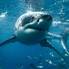
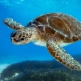
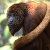

Parcial final computacion grafica
Samuel Rendón Rodríguez
Ricardo Andres Correa
Juan David Basto
TIBURON

Los selaquimorfos son un superorden de
condrictios (peces cartilaginosos)
conocidos comúnmente con el nombre
de tiburones o escualos.
TORTUGA

Las tortugas o quelonios forman un
orden de reptiles caracterizados
portener un tronco ancho y corto,
y un caparazón que protege los órganos internos
de su cuerpo.
Mono

El mono aullador rojo es una especie
de primate platirrino de la familia de
los atélidos que habita en en Venezuela,
Perú, Ecuador y Colombia,